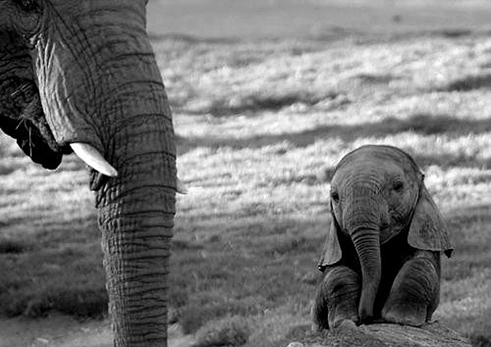
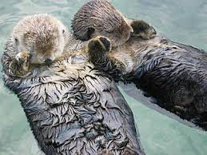

Elephant
Elephantidae is a family of large, herbivorous proboscidean mammals collectively called elephants and mammoths. These are terrestrial large mammals with a snout modified into a trunk and teeth modified into tusks. Most genera and species in the family are extinct. Only two genera, Loxodonta (African elephants) and Elephas (Asiatic elephants), are living. The family was first described by John Edward Gray in 1821,[4] and later assigned to taxonomic ranks within the order Proboscidea. Elephantidae has been revised by various authors to include or exclude other extinct proboscidean genera.
Link to the elephant pageCurculionidae
(Trachelophorus giraffa)

The Curculionidae are the family of the "true" weevils (or "snout beetles"). They are one of the largest animal families, with 6,800 genera and 83,000[1] species described worldwide. They are the sister group to the family Brentidae.[2] They include the bark beetles as the subfamily Scolytinae, which are modified[unreliable source?] in shape in accordance with their wood-boring lifestyle. They do not much resemble other weevils, so they were traditionally considered a distinct family, Scolytidae. The family also includes the ambrosia beetles, of which the present-day subfamily Platypodinae was formerly considered the distinct family Platypodidae.
Link to the bug pageOtter
Otters are carnivorous mammals in the subfamily Lutrinae. The 13 extant otter species are all semiaquatic, aquatic, or marine, with diets based on fish and invertebrates. Lutrinae is a branch of the Mustelidae family, which also includes weasels, badgers, mink, and wolverines, among other animals.
Link the otter page